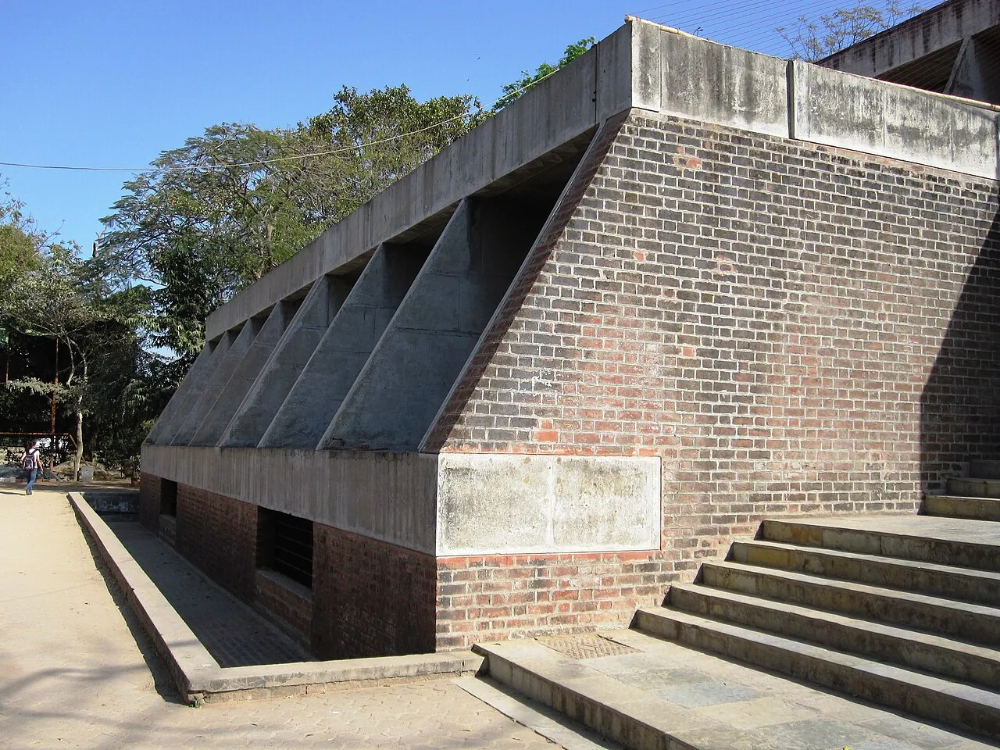
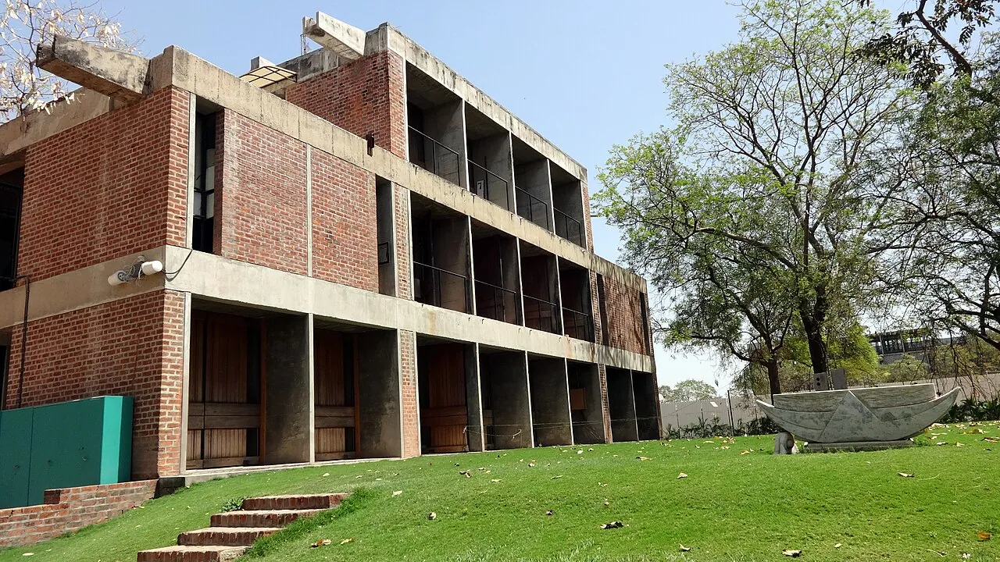
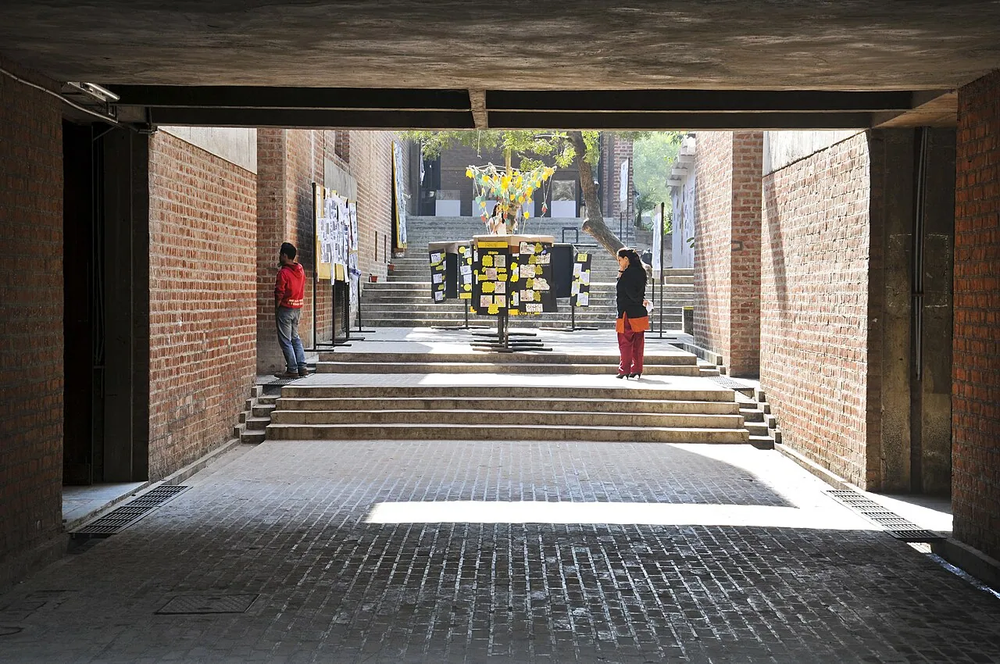
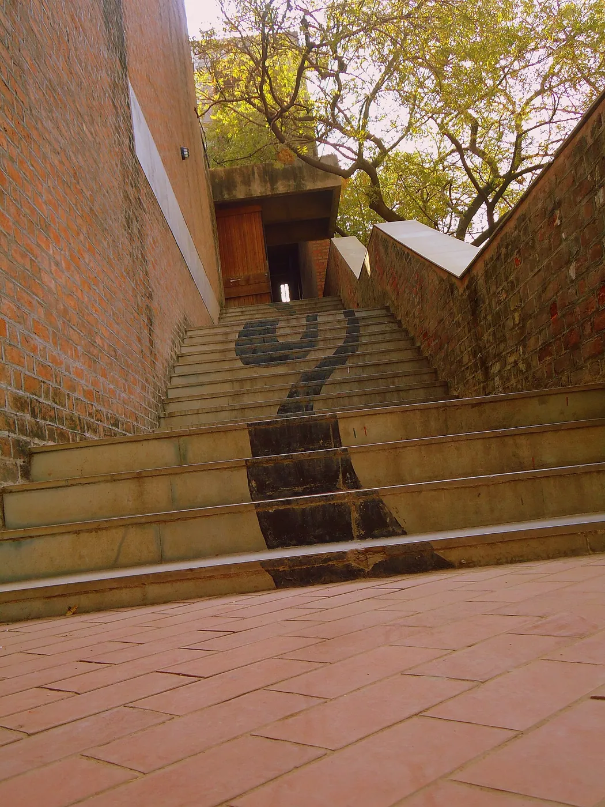
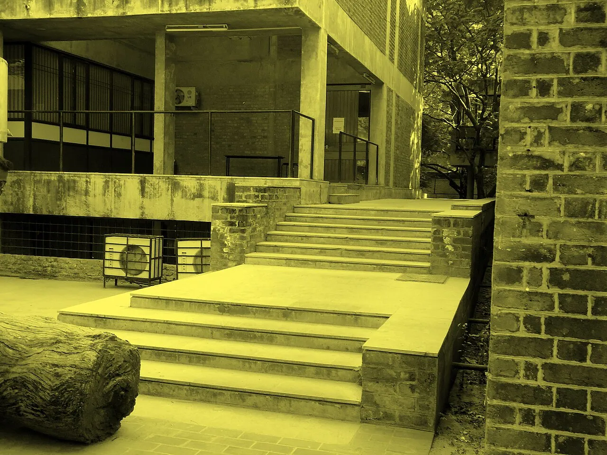
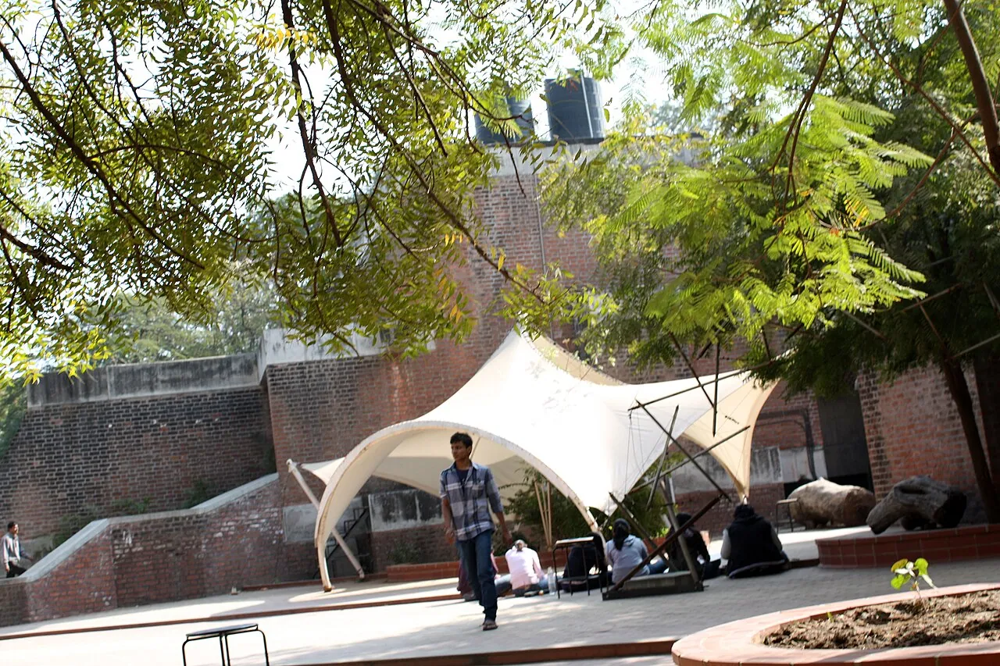

1/8 · Exterior · School of Building Science and Technology (SBST)Photo: Aurobindo Ogra · CC BY-SA 3.0 · source
2/8 · Exterior · A building from cept universityPhoto: Arjuncm3 · CC BY-SA 3.0 · source3/8 · Exterior · CEPT Building AhmedabadPhoto: Maulik Joshi · CC BY-SA 3.0 · source4/8 · Exterior · cept againPhoto: Palash Dugar · CC BY-SA 3.0 · source
5/8 · Exterior · Entrance area near sagra basement at CEPT CampusPhoto: Dhruvdhakan · CC BY-SA 3.0 · source
6/8 · Interior · The Students of CEPT are done some terrifice painting in the way of classroomPhoto: Mananshah1008 · CC BY-SA 3.0 · source
7/8 · DetailPhoto: Jaimil joshi · CC BY-SA 3.0 · source
8/8 · ContextPhoto: Vaishal Dalal · CC BY-SA 3.0 · sourceEducation · Regionalism
CEPT University
B. V. Doshi · Ahmedabad, India · 1966
Key featuresAn architecture school of brick and concrete, open to the campus at every level.
- Architect
- B. V. Doshi
- Place
- Ahmedabad, India
- Year
- 1966
- Typology
- Education
- Movement
- Regionalism
- Region
- South Asia
See it on the wall